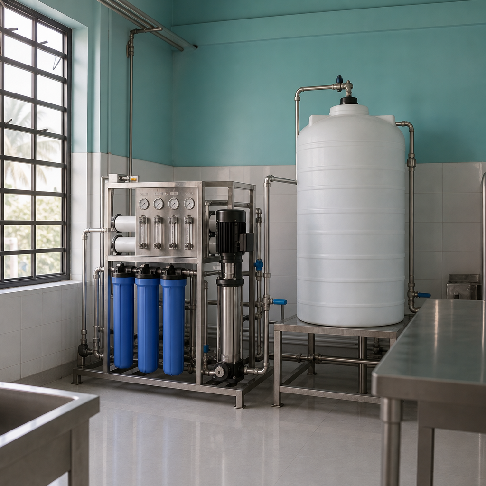

Water purification that matches how Ahmedabad actually uses water
From villa drinking loops in Shela to commercial process water on SG Highway, DA Water designs multi-stage purification after testing — not before.
The Ahmedabad problem
High TDS and hardness need sequenced treatment
Bore and mixed supplies across west Ahmedabad often bring elevated dissolved solids and scale-forming hardness. A single under-sink RO without upstream care struggles; a softener alone may not meet drinking targets. We map end uses first.
- Drinking vs bathing vs process loops treated differently
- RO, UF, UV and carbon stages only where they earn their keep
- Society common plants sized for peak morning demand
- Clear AMC so membranes and media stay on schedule

Benefits
What purification clients notice
Better taste & clarity
Stable drinking water quality for homes, offices and F&B counters.
Less appliance stress
Correct hardness control upstream protects heaters and fixtures.
Honest scope
We will not sell RO where softening alone solves the complaint.
Features
Systems we typically configure
- Point-of-use and centralised drinking water systems
- Pre-filtration, softening and RO hybrids
- UV polish where microbiological risk is a concern
- Product water storage and distribution guidance
- Operator checklists for society staff
- Integration with existing plant rooms
Why DA Water
Shela-based team, city-wide delivery
Local response for Shela and Bopal, plus commercial installs across Ahmedabad — one accountable partner from sample to AMC.
Process
From sample to steady drinking water
Test
TDS, hardness and usage mapping on site.
Design
Stage sequence and capacity matched to peaks.
Install
Commissioning with baseline readings logged.
Maintain
Filter, membrane and sanitation cadence.
FAQ